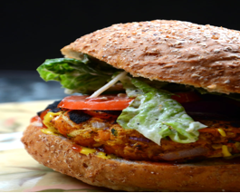

Vegan
VEGAN GREEN CHILI MAC 'N' CHEESE
Prep time
10 mins
Cook time
20 mins
Total time
30 mins
Ingredients
· 300g large macaroni shells
· 0.5 white onion, diced
· 3-4 cloves garlic, diced
· 1 cup raw cashews, soaked for 4-6 hours or overnight, then drained
· 1.5 cups vegetable broth
· 1 Tbsp corn-starch
· 0.5 tsp cumin
· 0.75 tsp chili powder
· 2 Tbsp yeast
· 400g diced chillies
Instructions
1. Boil macaroni according to package instructions.
2. In a medium skillet over medium-low heat, Sautee the onion and garlic in a bit of olive oil.
3. cook until soft and fragrant
4. Set aside.
5. Add onions and garlic to a blender with remaining ingredients, adding only half of the green chilies.
6. Blend until smooth,
7. Drain the pasta, set aside, and cover
8. To the same pot, add the cashew cheese and cook on low stirring frequently until slightly thickened.
9. Add the macaroni noodles to the cheese, along with the remaining green chilies and stir.
10. Serve immediately, garnish with remaining chillies
CREAMY VEGAN GARLIC PASTA WITH ROASTED TOMATOES
Prep time
10 mins
Cook time
20 mins
Total time
30 mins
Ingredients
· 450 g cherry tomatoes, halved
· 283 g whole wheat pasta
· Olive oil
· 2 medium shallots, diced
· 8 large cloves garlic, minced/grated
· Pinch sea salt and black pepper
· 25-33 g unbleached all-purpose flour
· 1 cup of vegetable stock
Instructions
1. Preheat oven to 204° C
2. Toss tomatoes in olive oil and sea salt.
3. Place cut side up on a parchment-lined baking sheet and bake for 20 minutes
4. Bring a large pot of water to a boil and cook pasta according to package instructions. When done, drain, cover and set aside.
5. Prepare the sauce. In a large skillet over medium-low heat, add 1 Tbsp (15 ml) olive oil and the garlic and shallot. Add a pinch of salt and black pepper and stir frequently, cooking for 3-4 minutes until softened and fragrant.
6. Stir in 3-4 Tbsp flour and mix with a whisk.
7. Once combined, slowly whisk in the vegetable stock a little at a time so clumps don’t form. Add another healthy pinch of salt and black pepper,
8. Bring to a simmer and continue cooking for another 4-5 minutes to thicken.
9. Once the sauce is to your desired thickness, taste and adjust seasoning as needed. Then add pasta and roasted tomatoes and stir.
10. Serve immediately and garnish with extra black pepper, fresh basil, and/or vegan parmesan cheese.
COCONUT CUrry
Prep time
5 mins
Cook time
25 mins
Total time
30 mins
Ingredients
CURRY
· 15 ml coconut or olive oil
· 1 small onion, diced
· 4 cloves garlic, minced
· 6 g fresh grated ginger
· 45 g broccoli florets, diced
· 64 g diced carrots
· 45 g diced tomato
· 28 g snow peas
· 8 g curry powder
· 396 g cans light coconut milk
· 240 ml vegetable stock
· Sea salt and black pepper to taste
COCONUT QUINOA
· 396 g can light coconut milk
· 170 g white quinoa (rinsed)
Instructions
1. Add quinoa to a medium saucepan over medium heat and toast for 3 minutes.
2. Add 1 can light coconut milk and 1/2 cup water.
3. Bring to a boil, then reduce heat to simmer,
4. cover and cook for 15 minutes or until the quinoa is light, fluffy and the liquid is absorbed. Set aside until serving.
5. heat a large saucepan or pot to medium heat and add 1 Tbsp coconut oil. Add onion, garlic, ginger, carrot, broccoli and a pinch of salt and pepper and stir.
6. Cook, stirring frequently, until softened – about 5 minutes.
7. Add curry powder, cayenne, veggie stock, coconut milk, another healthy pinch of salt and stir.
8. Bring to a simmer then reduce heat slightly and continue cooking for 10-15 minutes.
9. Add the snow peas and tomatoes in the last 5 minutes
10. Taste and adjust seasonings as needed.
11. Serve over coconut quinoa and garnish with fresh lemon juice and herbs.
VEGAN PIZZA
Prep time
20 mins
Cook time
20 mins
Total time
40 mins
Ingredients
PIZZA
· 1/2 pizza crust
· 1/2 cup red, green, and orange bell pepper, chopped
· 1/3 cup red onion, chopped
· 1 cup button mushrooms, chopped
· 1/2 tsp dried or fresh basil, oregano, and garlic powder
· 1/4 tsp sea salt
SAUCE
· 170g can tomato paste
· 1/2 tsp each dried or fresh basil, oregano, garlic powder, granulated sugar
· Sea salt to taste (~1/4 tsp)
TOPPINGS
· 1/2 cup vegan parmesan cheese
· Red pepper flake + dried oregano
Instructions
1. Preheat oven to 218° C and position a rack in the middle of the oven.
2. Bring large skillet to medium heat.
3. Once hot, add 1 Tbsp olive oil, onion and peppers. Season with salt, herbs and stir. Cook until soft and slightly charred
4. Add the mushrooms in the last few minutes. Set aside.
5. Prepare sauce by adding tomato sauce to a mixing bowl and adding seasonings and salt to taste. Adjust seasonings as needed. Set aside.
6. Prepare vegan parmesan
7. Roll out dough onto a floured surface and transfer to a parchment-lined round baking sheet.
8. Top with desired amount of tomato sauce sprinkle of parmesan cheese and the sautéed veggies.
9. Use the baking sheet to gently slide the pizza directly onto the oven rack WITH the parchment underneath.
10. Bake for 17-20 minutes or until crisp and golden brown.
11. Serve with remaining parmesan cheese, dried oregano and red pepper flake.
Quinoa Veggie Burgers
Prep Time:
10 mins
Cook Time:
10 mins
Total Time:
20 minutes

Ingredients
1 can chickpeas, drained, well-rinsed, and mashed
1/2 red onion, finely diced
1 small zucchini, grated
3 tbsp finely chopped cilantro
3 tbsp red wine vinegar
1 tbsp sriracha sauce
2 tbsp natural peanut butter
1 tsp cumin
1 tsp garlic powder
2 tsp black pepper
1/2 tsp sea salt
1 cup quick oats
2 tbsp olive oil
Instructions
After draining and rinsing the chickpeas, place them in a bowl and mash them with a fork.
Add all the other ingredients to the bowl.
Use your hands to mix very well.
Form into 6-8 patties.
Cook on the BBQ around 204°C for approximately 10 minutes each side.
You can also fry these in a pan with some oil for 3-5 minutes a side.